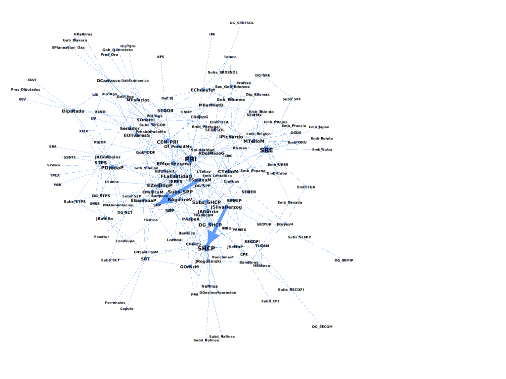

Los gabinetes que manejaron la crisis de 1994
La crisis de 1994 fue resultado de las políticas económicas implementadas para abordar los problemas que surgieron tras el colapso del mercado interno y financiero en 1982. En ese entonces, diversos factores como el endeudamiento excesivo con la banca privada, la sobreestimación de los ingresos petroleros, la competencia entre grupos industriales y la concentración del capital financiero en una red cerrada, así como la falta de incorporación de nuevas tecnologías en la producción industrial y agrícola, sentaron las bases de la crisis.
El gobierno de Carlos Salinas de Gortari (1988-1994) fortaleció a los grandes financieros como actores estratégicos en la toma de decisiones económicas en México. A través de reformas, políticas y la inclusión de empresarios en puestos clave de negociación, como en el caso del Tratado de Libre Comercio de América del Norte (TLCAN), Salinas generó confianza en este sector, lo que le permitió tener un mayor control económico. Sin embargo, su designación como presidente generó un conflicto político, resultando en la creación de un frente opositor liderado por Cuauhtémoc Cárdenas Solórzano y otros partidos de izquierda, sindicatos y movimientos sociales.
Estos antecedentes son importantes para entender la necesidad de forjar alianzas con los grupos financieros como parte de una estrategia de legitimación del régimen y la política económica previa. Además, la economía mexicana no mostraba señales de crecimiento esperado después de la implementación de programas de recuperación económica, los cuales buscaban reducir la inflación mediante la disminución del gasto público y el congelamiento salarial. En 1987, se produjo un nuevo colapso financiero en la Bolsa Mexicana de Valores como consecuencia del “lunes negro” en la Bolsa de Valores de Nueva York. Esta crisis bursátil generó una falta de confianza generalizada en varios mercados internacionales, incluyendo México.
Durante el gobierno de Salinas, hubo un debilitamiento de la legitimidad política y un fortalecimiento de los grupos bursátiles que controlaban una banca paralela debido a las cotizaciones en las casas de bolsa. Para remediar esta falta de credibilidad, se utilizaron pactos y alianzas con grupos opositores, pero fortaleciendo a aquellos con vínculos estrechos con los bloques financieros, como el caso de los líderes empresariales del Partido Acción Nacional (PAN).
En contraste, los grupos opositores con menor cercanía a este bloque fueron reprimidos y marginados en la toma de decisiones en políticas públicas. La imagen tanto interna como externa de México se enfocó en la modernidad, entendida como la asimilación a los países capitalistas centrales que habían rechazado el Estado de Bienestar en favor del capitalismo monopolista. La privatización de la banca mexicana generó confianza en los bloques financieros y representó un impulso sin precedentes al dominio financiero sobre las necesidades de la economía real. La siguiente fase fue la reconfiguración de esta relación, involucrando a los principales representantes empresariales en la toma de decisiones económicas, como en la negociación del del TLCAN.
Sin embargo, la burbuja mediática y financiera no duró mucho tiempo, ya que estalló una crisis al interior del PRI tras la muerte del candidato presidencial y del presidente del partido, quienes estaban estrechamente vinculados con Salinas. Además, el 1 de enero de 1994, el Ejército Zapatista de Liberación Nacional (EZLN) se levantó en armas en oposición al TLCAN, el cual perjudicaba gravemente a los campesinos mexicanos, especialmente a los más pobres en el sureste del país, como los indígenas chiapanecos.
Estos factores impidieron la implementación controlada de una devaluación del tipo de cambio debido a la creciente oferta de dólares en la Bolsa Mexicana de Valores. La devaluación se retrasó hasta los primeros veinte días del nuevo presidente, Ernesto Zedillo Ponce de León, lo cual generó pánico generalizado y desencadenó la crisis financiera de 1994, conocida como el Efecto Tequila, que marcó el inicio de una serie de crisis globales en el capitalismo.
Las comunidades de socialización son grupos de personas con vínculos comunes, como familiares, amigos, políticos, laborales, escolares o religiosos. Estas comunidades facilitan el flujo de capital social entre sus miembros, basado en actitudes colectivas como la cooperación, competencia, apertura y prestigio, que influyen en el comportamiento de cada individuo. Son importantes para entender las relaciones de poder y la selección de agentes intermediarios en los bloques de poder político y financiero durante la crisis de 1994.
Durante ese periodo, los grupos financieros se beneficiaron de la privatización y reprivatización de empresas y bancos, lo que les permitió adquirir un papel estratégico en la economía nacional.
Estos agentes financieros tenían vínculos con inversionistas extranjeros y superaban la capacidad de inversión de los grupos empresariales tradicionales. Por otro lado, los grupos políticos experimentaron cambios en su correlación de fuerzas, siendo desplazados por los financieros en los cargos clave para el diseño de políticas económicas. Durante el gobierno de Salinas, los financieros se consolidaron como grupo hegemónico, pero durante el gobierno de Zedillo, después de la fase de recuperación de la crisis, se produjo una descomposición debido a conflictos internos, lo que llevó a su derrota en las elecciones de 2000.
La camarilla de Salinas, compuesta por amigos de licenciatura como Manuel Camacho Solís, José Francisco Ruíz Massieu, Emilio Lozoya Thalmann, Hugo Andrés Araujo y Alberto Anaya, ocupó puestos clave en la administración pública gracias a sus vínculos familiares, políticos y amistosos. Durante más de diez años, esta camarilla ascendió en la jerarquía estatal, especialmente en las secretarías de Programación y Presupuesto (SPP), Hacienda y Crédito Público (SHCP) y Banxico. En ese periodo, la SPP se convirtió en contrapeso al poder de la SHCP en el control del presupuesto y los recursos públicos. Salinas colocó a sus amigos y excompañeros de trabajo en posiciones importantes, como José Córdoba Montoya en la secretaría de la Presidencia, quien tenía vínculos con otros actores clave como Guillermo Ortíz Martínez y Rogelio Gasca Neri.
La fuerza de Salinas radicó en su capacidad para colocar a su camarilla en puestos clave del Estado, mientras que los políticos tradicionales mantenían influencia en otras secretarías de Estado. Esto generó un equilibrio entre los grupos financieros y los políticos, con los primeros teniendo mayor control en áreas económicas y los segundos en áreas políticas.
En este sentido, la fuerza de Salinas se derivó de su capacidad de imposición de agentes de su camarilla en puestos clave del Estado, como la SPP, la SHCP, SRE, SEP, SECOFI, SEMEPI, SEDESOL y DDF dejando al grupo de los políticos tradicionales la SEGOB, Defensa Nacional, Marina, Pesca, SAGARPA, SCT, Contraloría General, Salud, STPS, Reforma Agraria y PGR. En tanto que la SEP, y Turismo estuvieron alternados por los políticos y los financieros como se aprecia el gráfico

1 Red del gabinete de Ernesto Zedillo
El gabinete económico de Ernesto Zedillo experimentó cambios significativos al inicio de su administración debido a la crisis de 1994 y 1995. A diferencia de su predecesor, hubo más cambios en el gabinete en un período de tiempo más corto, especialmente en secretarías clave como Hacienda, Gobernación, Trabajo y Energía. A pesar de esto, los nuevos titulares en su mayoría provenían de secretarías similares, como se muestra en el gráfico 17 con los nodos de color celeste. Por otro lado, los nodos de color negro corresponden a los actores vinculados a Banxico.
Es importante destacar que uno de los actores centrales de esta red es Francisco Labastida, quien ocupó la Secretaría de Energía, Minas e Industria Paraestatal (SEMIP) durante el gobierno de Salinas, fue Gobernador de Sinaloa durante el gobierno de Zedillo y ocupó la titularidad de dos secretarías, Agricultura (SAGARPA) y Gobernación, así como cargos en la dirección nacional del PRI. Hacia el final del sexenio, Labastida se postuló como candidato presidencial por primera vez, lo que reflejó su influencia en el partido.
Otros actores como Emilio Chuayfet e Ignacio Pichardo Pagaza también registraron altos grados de centralidad debido a sus vínculos con instituciones políticas tanto en gabinetes presidenciales anteriores como en cargos de elección popular. El PRI y la SHCP se mantienen como las instituciones más influyentes, a diferencia de la SPP, que fue reemplazada en este período por la SEDESOL, lo que diluyó su influencia presupuestaria en la formulación de políticas sociales.
En la red del capital político del gabinete de Zedillo, se observa que instituciones como las subsecretarías de Hacienda, Programación y Presupuesto, Relaciones Exteriores y el PRI concentran la mayoría de los vínculos. Esto muestra un patrón de relación particular para este gabinete, donde la SRE adquiere relevancia y el IEPES pierde influencia como comunidades de socialización política.
En comparación con el gabinete salinista, la topología de esta red muestra sutiles diferencias en términos de conectividad, ya que muchos miembros del gabinete de Zedillo habían trabajado previamente en el gabinete de Salinas. Sin embargo, después de 1995, Zedillo realizó una serie de ajustes en las secretarías de Hacienda, comenzando con el despido de José Ángel Gurría como titular debido a las omisiones de información que condujeron a la crisis financiera poco antes de que Zedillo asumiera el cargo.

Una característica importante fue la inclusión de titulares provenientes del sector empresarial privado en el gabinete. Uno de estos casos fue Jesús Reyes-Heroles González-Garza, designado como director general de PEMEX debido a la influencia de su padre, Jesús Reyes Heroles, quien fue presidente del PRI durante el gobierno de Echeverría y estratega político en la apertura del régimen en ese período.
Al finalizar el sexenio, siete titulares del gabinete, incluido el propio presidente, ingresaron a la dirección de empresas, consultorías legales o financieras, consejos de administración y bancos internacionales.Zedillo se convirtió en presidente del consejo de administración de empresas como Procter & Gamble, Alcoa y Union Pacific1. José Ángel Gurría, quien ocupó los cargos de secretario de Hacienda y Relaciones Exteriores, así como Carlos Jarque de SEDESOL, desempeñaron puestos clave en el Banco Interamericano de Desarrollo (BID). Por su parte, Esteban Moctezuma sigue siendo el Presidente de Fundación Azteca del Grupo Salinas hasta la actualidad. Luis Tellez, secretario de Energía, ocupó la presidencia del grupo Desc, vinculado con el grupo Monterrey, mientras que Agustín Carstens, subsecretario de Hacienda y subdirector de Banxico, ocupó cargos de alta dirección regional en el FMI.
Para comprender la relación que establecieron los políticos con los grupos financieros, es necesario comprender la dinámica misma de la crisis de 1994. Como se describió anteriormente, el fortalecimiento de las redes de gobernabilidad, compuestas por políticos y financieros, ha generado una visión particular sobre la política económica del país, orientada a resolver las principales problemáticas de los grupos financieros. La incursión política de estos grupos ha tenido un impacto en la configuración de los gabinetes que se muestra en el grado de agrupamiento y cercanía de las redes de grupos financieros en cada fase del ciclo de crisis.